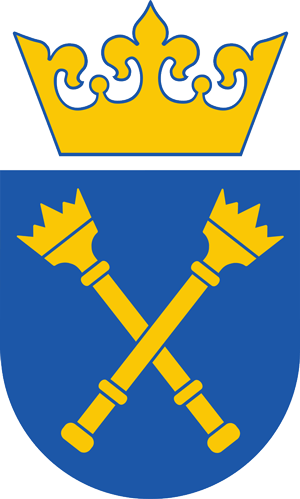

2016 - dziś
Uniwersytet Jagielloński, Kraków
informatyka, specjalność produkcja gier wideo, studia magisterskie
- Otrzymałam stypendium rektora za rok 2016/2017.
-
Jestem w trakcie pisania pracy magisterskiej pt.
"Gra poważna: Mistrz projektowania imprez turystycznych", będącej projektem
wykonywanym w grupie dwuosobowej. Do tworzenia gry wykorzystywany jest silnik
Unity oraz język C#.

2013 - 2016
Uniwersytet Jagielloński, Kraków
informatyka, studia licencjackie
- Otrzymałam tytuł licencjata po obronie pracy pt.:
"Modelowanie scen 3D z wykorzystaniem pixi.js."